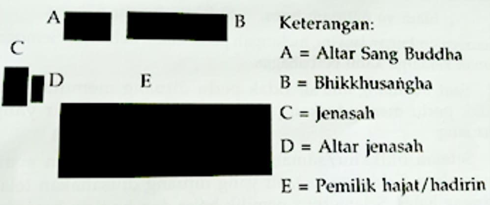

Catatan
I.
Dalam memimpin upacara, pandita pemimpin upacara diharap mengenakan busana kepanditaan.
II.
Bila keadaan memungkinkan, altar diletakkan di tempat upacara.
Di atas altar ditempatkan:
1. arca atau gambar Sang Buddha
2. dupa dan tempat menaruh dupa
3. lilin atau lampu: minimal sepasang
4. bunga: di talam atau di vas.
Altar bisa diatur indah atau sepantasnya.
III.
Sebelum pembacaan pāṭhā (pālivacana) dimulai,
pemohon pemberkahan menyalakan lilin dan dupa. Hadirin bernamaskara di depan altar dengan
dipimpin oleh pemimpin upacara.
IV.
Bila bhikkhu atau sāmaṇera dimohon melakukan pemberkahan, tata upacaranya adalah sebagai
berikut:
1. Pemimpin upacara beserta hadirin membaca permohonan lima sila: Okāsa ahaṁ bhante ...;
atau Mayaṁ bhante ....
2. Pemimpin upacara memimpin pembacaan permohonan paritta.
3. Pada waktu bhikkhu atau sāmaṇera membacakan paritta dan memercikkan tirta,
hadirin duduk bersikap añjali dengan tenang.
V. Pembacaan wacana Pāli dalam Upacara Perkabungan
Dalam upacara perkabungan, parittā-rādhana tidak perlu dibacakan. Pembacaan wacana Pāli
(yang sering dirancukan sebagai pembacaan ‘paritta’) tidak dilakukan menghadap jenasah atau
abu jenasah, melainkan pada keluarga leluhur dan hadirin peserta upacara yang ada di sana.
Tata letak dalam upacara perkabungan diatur sepantasnya disesuaikan dengan tempat
yang ada. Akan tetapi kalau memungkinkan, jenasah, abu jenasah dan/atau gambar jenasah
diletakkan di sebelah kanan depan altar Buddharūpa dengan kepala jenasah di sisi dekat
altar.
Para bhikkhu/sāmaṇera atau umat pembaca Pālivacana, atau pembabar Dhamma berada di
sisi kiri altar. Hadirin peserta upacara berada di depan altar.
Altar persembahan untuk mendiang diletakkan di sisi kiri atau di sisi depan
jenasah, abu jenasah dan/atau gambar jenasah.

Keterangan:
A = Altar Sang Buddha
B = Bhikkhusaṅgha
C = Jenasah
D = Altar jenasah
E = Pemilik hajat/hadirin
VI. Pelimpahan Jasa
Ada cara-cara dalam melakukan pelimpahan jasa, yaitu dengan membacakan
Ettāvatātiādipattidāna, Pattidāna Gāthā, tuang air ketika bhikkhu/sāmaṇera membacakan syair
pelimpahan jasa, dsb. Cara-cara ini dapat dipilih salah satu saja. Misalnya, kalau dalam
suatu upacara diadakan penuangan air untuk pelimpahan jasa, pembacaan Ettāvatātiādipattidāna
atau Pattidāna Gāthā ditiadakan.
VII. Penggunaan Air dalam Upacara
1. Air yang digunakan untuk pemberkahan dalam upacara- upacara atau yang disebut dengan
tirta hanya digunakan dalam upacara-upacara maṅgala saja. Untuk upacara avamaṅgala (upacara
perkabungan) tidak perlu ada tirta pemberkahan. Sehingga dalam upacara perkabungan tidak
perlu disiapkan tirta untuk pemberkahan.
2. Air yang digunakan untuk upacara pelimpahan jasa dituang saat bhikkhu/sāmaṇera
membacakan syair pelimpahan jasa (Yatha varivaha ....). Saat menuangkan air bisa mengucapkan
dalam hati kalimat berikut ini:
Idaṁ vo ñātinaṁ hotu. Sukhitā hontu ñātayo.
Semoga timbunan jasa ini, melimpah pada sanak keluarga. Semoga sanak
keluarga kami berbahagia.
Saat menuang air, air tidak perlu dituang memutar dan tidak perlu menyodorkan jari tangan
menyentuh air yang tertuang.
Setelah bhikkhu/sāmaṇera mulai mengucapkan syair anumodana (Sabbītiyo ....), air yang
dituang diusahakan telah tertuang habis. Selanjutnya pemilik hajat dan hadirin beranjali
seraya mendengarkan bhikkhu/sāmaṇera membacakan syair anumodana hingga selesai.
Penuangan air ini sekadar sebagai simbol pelimpahan bagi yang menginginkan saja, bukan suatu
keharusan dan tidak harus semua hadirin menuang, artinya bisa diwakili oleh salah seorang
saja.